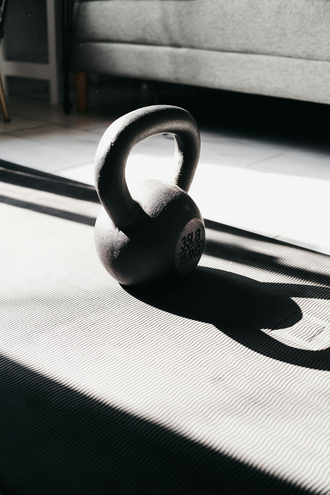

Gift guide
Gym Gift Basket for Him or Her: Home Gym Gift Ideas

This guide contains affiliate links. If you buy through them, Holistic Life may earn a small commission at no extra cost to you. How we use affiliate links.
Quick answer
- The best home gym gifts fold, stack or hang, so they fit a closet or a corner.
- Beginners do well with a thick mat, a band set, light adjustable dumbbells and a foam roller.
- Lifters will appreciate a kettlebell, a foldable bench or a doorway pull-up bar.
- Skip bulky single-use machines and anything too heavy to start with.
Gifts for a home gym can go wrong in one way: they take up too much room. In an apartment or small spare room, every piece of gear has to earn its spot. The good ones fold, stack, hang or slide under a bed.
This is a nurse-run site, and the focus here is simple. Pick things that are easy to start with, safe to use in a small space and likely to stay in rotation after the first week. If you would rather give several small things, there is a gym gift basket for him or her further down.
How to choose by experience level
For a beginner. Think comfort and low pressure. A thick mat, a band set, a foam roller and yoga blocks are friendly starting points. If you want a first weight, choose a pair of adjustable dumbbells that begin light. For a simple plan to go with them, point them to our beginner dumbbell workout.
For someone who already lifts. Look at what they have, then fill the gap. A kettlebell, a foldable bench or a doorway pull-up bar adds new exercises without much space. If you do not know their current weights, a gift card is safer than guessing.
Check the space and the floor
A few minutes of checking saves a return.
- Measure the spot. Find the free floor area and the door heights. Many people only have a patch the size of a yoga mat.
- Think about noise. In an apartment, dropped weights are heard downstairs. A thick mat or rubber flooring tiles helps, and so does gear that stays low, such as bands.
- Check weight limits. Benches, racks and pull-up bars list a maximum load. Make sure it is comfortably above the user's weight plus any weights they hold.
- Check the door frame. A doorway bar rests on the frame. Look at the trim and the frame type, and read the instructions before use. If the frame looks loose or worn, skip this gift.
The gift list
The links open a current selection on Amazon. Each pick lists what to look for so you can choose well anywhere.
Adjustable dumbbells
One pair that changes weight can stand in for a whole rack, which is a big win when floor space is limited.
What to look for
- A starting weight that is light enough for a beginner
- A quick, secure way to change weight, with no loose plates
- A compact stand or tray so they store neatly
Options that fit
- Keppi adjustable dumbbells, 5 to 25 lb, pair Twist the handle to change weight, and a storage tray is included (paid link)
- Core Fitness adjustable dumbbells, 5 to 50 lb, pair Twist-lock handles, and each dumbbell sits in its own cradle (paid link)
See more adjustable dumbbells on Amazon (paid link)
Resistance band set
Bands add strength work to almost any routine, weigh almost nothing and tuck into a drawer or a travel bag. Most sets are natural latex, so check first if the person has a latex allergy.
What to look for
- Several resistance levels in one set
- Handles, a door anchor and ankle straps included
- The resistance of each band clearly stated
Options that fit
- WHATAFIT resistance band set with handles, 5 bands Five natural latex tubes from 10 to 50 lb, with handles, ankle straps and a door anchor (paid link)
- VEICK resistance band set with handles, 5 bands Five latex tubes, two handles, two ankle straps and a door anchor (paid link)
See more resistance band sets on Amazon (paid link)
Thick exercise mat
A mat cushions knees and hands, and it gives a small room a clear workout spot that is easy to roll away.
What to look for
- Enough thickness for knees and wrists, without feeling wobbly
- A non-slip surface on both sides
- A length that fits a full body stretched out
Options that fit
- Gruper non-slip exercise mat, 72 x 24 inches Non-slip texture on both sides, in two thicknesses (paid link)
- KEEP extra wide exercise mat, 7 mm thick, 72 x 32 inches Non-slip texture on both sides and 72 inches long (paid link)
See more exercise mats on Amazon (paid link)
Kettlebell
One kettlebell supports swings, squats and carries, so a single piece can anchor a full session in a tiny space.
What to look for
- A wide handle that is comfortable to grip with one or both hands
- A flat base that does not roll
- A weight that suits the person, so check what they already lift
Options that fit
- Amazon Basics vinyl kettlebell, 15 pounds Flat base and a wide textured handle, sold in other weights too (paid link)
See more kettlebells on Amazon (paid link)
Doorway pull-up bar
A bar in a door frame adds pulling exercises without taking any floor space, and it comes down when it is not needed.
What to look for
- A design that matches the door frame, since many hang on the trim and some need a flat frame
- Padded grips and a clear weight limit
- Instructions that explain how to check the frame first
See doorway pull-up bars on Amazon (paid link)
Foam roller
A roller is a simple way to loosen up before or after a workout, and it stands upright in a corner.
What to look for
- Firm foam that keeps its shape
- A length of 12 to 18 inches, which fits a closet shelf
- A plain surface to start with, or ridges for a deeper massage
Options that fit
- Amazon Basics high-density foam roller, 18 inches Firm foam that keeps its shape, and light to carry (paid link)
See more foam rollers on Amazon (paid link)
Jump rope
A rope is cardio in a pocket. It suits people who want a quick warm-up or a short interval session.
What to look for
- An adjustable length
- Comfortable handles with a smooth swivel
- A softer cable for beginners, which is easier to learn on
See jump ropes on Amazon (paid link)
Yoga blocks and strap
These make stretching and yoga more comfortable and reachable, and they stack away in a bag or on a shelf.
What to look for
- Blocks with a firm, grippy surface
- A strap with a sturdy metal buckle or loops
- A set that includes both pieces
See yoga blocks on Amazon (paid link)
Foldable bench
A bench is the bigger gift. It opens up more dumbbell exercises, and a folding one slides behind a door.
What to look for
- A clear weight capacity and a stable frame
- An adjustable back, if you want more variety
- A frame that folds for storage
Options that fit
- FLYBIRD WB5 adjustable weight bench, foldable Steel frame with a stated 800 lb capacity and many back positions (paid link)
- YOLEO adjustable weight bench, foldable Stated 827 lb capacity, 10 back positions and a carry handle (paid link)
See more foldable benches on Amazon (paid link)
Wall hooks or a small storage rack
Getting gear off the floor keeps a room calm. Hooks and a slim rack turn bands, ropes and mats into something tidy.
What to look for
- Hardware that suits the wall type, with removable options for renters
- A weight rating higher than what you plan to hang
- A slim profile that stays flat to the wall
See storage racks on Amazon (paid link)
What to skip
- Bulky single-use machines. Large machines that do one exercise often end up as a coat rack in a small home.
- Weights that are too heavy to start. Starting too heavy makes good form harder and can put people off. Start light and let them level up.
- Anything that needs permanent installation if the person rents. Choose removable hooks and freestanding gear.
- Gear in guessed sizes. If you are unsure about size or weight, a gift card for the same store lets them choose.
Build a gym gift basket for him or her
Small gifts add up to a good present when they come together. Use a gym bag or a storage bin as the basket, so the container gets used too.
- For a beginner. Mini loop bands, a jump rope, a massage ball and a pair of grippy socks.
- For someone who lifts. A foam roller, a pair of lifting grips, a cooling towel and a large water bottle.
- For a small apartment. A band set with a door anchor, a pair of core sliders, a thin folding mat and removable wall hooks for storage.
If the big gift is already chosen, one or two of these make a good add-on. Our list of fitness stocking stuffers has plenty more ideas in that size.
If they are building from zero
Someone setting up their first corner may like help with the plan more than the gear. Share our small space home gym starter kit with the gift, so they know what to buy next and what can wait.
Frequently asked questions
What is a good first gift for someone starting a home gym?
A thick mat and a resistance band set are the simplest start. They cost little floor space, work for many levels and need no setup.
Are adjustable dumbbells good for apartments?
Usually yes, because one pair replaces many. Place them on a mat or a rubber floor tile when you lift, and set them down gently to cut noise for neighbors.
Save this guide for later
Tap a pin to save it to your Pinterest boards.